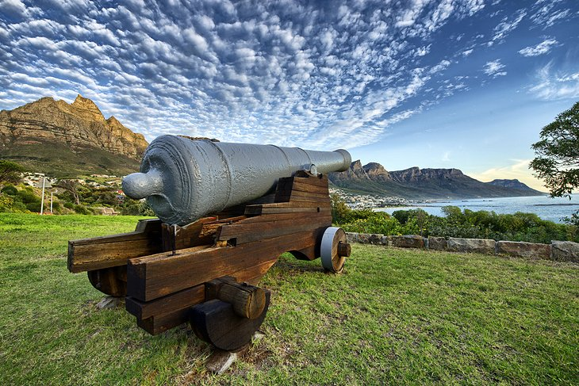
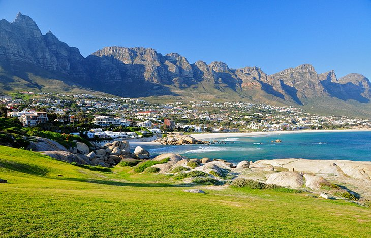

Cape Town
Cape Town is the oldest and second largest city in South Africa, after Johannesburg, and also the seat of the Parliament of South Africa. Colloquially named the Mother City, it is the largest city of the Western Cape province and forms part of the City of Cape Town metropolitan municipality. The Parliament of South Africa is situated in Cape Town. The other two capitals are located in Gauteng (in Pretoria, the executive capital, where the Presidency is based) and in the Free State (in Bloemfontein, the judicial capital, where the Supreme Court of Appeal is located). The city is known for its harbour, for its natural setting in the Cape Floristic Region, and for landmarks such as Table Mountain and Cape Point. Cape Town is home to 66% of the Western Cape's population. The city was named the World Design Capital for 2014 by the International Council of Societies of Industrial Design. In 2014, Cape Town was named the best place in the world to visit by both The New York Times and The Daily Telegraph. Cape Town has also been a host city for both the 1995 Rugby World Cup and 2010 FIFA World Cup, and annually hosts the Africa leg of the World Rugby 7s. Located on the shore of Table Bay, Cape Town, as the oldest urban area in the Western Cape, it was developed by the Dutch East India Company (VOC) as a supply station for Dutch ships sailing to East Africa, India, and the Far East. Jan van Riebeeck's arrival on 6 April 1652 established the VOC Cape Colony, the first permanent European settlement in South Africa. Cape Town outgrew its original purpose as the first European outpost at the Castle of Good Hope, becoming the economic and cultural hub of the Cape Colony. Until the Witwatersrand Gold Rush and the development of Johannesburg, Cape Town was the largest city in South Africa.
Table Mountain

Rising 1,087 meters south of the city center, flat-topped Table Mountain is the most photographed landmark in South Africa and a constant reminder that nature is queen in this stunning seaside city. Created from massive beds of sandstone and slate, the mountain forms the northern end of the Cape Peninsula and lies within Table Mountain National Park. The park protects an astounding diversity of plants and more than 1,470 flower species–the planet's richest floral kingdom–as well as animals such as cute snub-nosed dassies (rock hyraxes), caracals, and baboons. Within the park, Devil's Peak flanks the mountain on the east, and Lion's Head on the west, while the crags known as the Twelve Apostles loom over the beach resorts on the Atlantic coast. A layer of clouds, called the "tablecloth" frequently cloaks the mountain's peak, but when the clouds clear, visitors can enjoy spectacular views of Cape Town and the entire Cape Peninsula from the summit. Bring a sweater as it can be cold and windy at the top. For those short on time, and energy, a revolving cableway climbs to the summit, covering the distance of 1,244 meters in seven minutes. The cableway runs daily–except in high winds, so it's a good idea to check the website or call for current conditions before heading out. Also to avoid long lines, try booking tickets online. At the upper station of the cableway, a café features a small viewing terrace and serves as the starting-point of three short walks, which highlight the gigantic scale of the landscape. Those wishing to summit the mountain on foot can choose between more than 350 different routes varying in difficulty. Depending on the starting-point, the climb takes between two to four hours. For superb views of Table Mountain and the best vantage point to photograph this iconic landmark, hike or drive up Signal Hill or Lion's Head - both offer stunning views from their summits.
Kirstenbosch National Botanical Gardens

In a beautiful setting on the eastern slopes of Table Mountain, Kirstenbosch Botanical Gardens are part of the Cape Floristic Region UNESCO World Heritage site. The site was bequeathed to the state by Cecil Rhodes in 1902 and the gardens were established in 1913 to preserve the country's indigenous flora–one of the first botanical gardens in the world with this mission. More than 20,000 native South African plant species are collected, grown, and studied in the hilly 528-hectare nature reserve of indigenous forest and fynbos. Of particular historical interest are a hedge of wild almond-trees planted by Jan van Riebeeck in 1660 and an avenue of camphor and fig trees planted by Cecil Rhodes in 1898. The flowers, shrubs, and trees are arranged so that a show of blossoms and color brightens the gardens throughout the year. Don't miss the proteas; the scented garden; the impressive collection of cycads; the Sculpture Garden; and the Botanical Society Conservatory, a custom-built greenhouse with plants from arid regions. Well-marked trails thread through the wooded slopes, and the Tree Canopy Walkway provides panoramic views across the mountain-backed gardens. One of the trails leads through a ravine to the summit of Table Mountain. In summer, the gardens make an evocative venue for outdoor concerts. Green thumbs and garden lovers should also visit Company's Garden, an oasis of exotic trees, flowers, aviaries, and ponds in the heart of the city. While here, visitors can also explore the Iziko South African Museum and Planetarium and the Iziko National Gallery.
Signal Hill and the Noon Gun
Five minutes drive west of the city center, Signal Hill offers stunning views over Cape Town, Table Bay, and the glittering Atlantic Ocean from its 350-meter summit. The hill forms the body of the adjacent Lion's Head peak and was named for its historical use when signal flags were flown from here to send messages to approaching ships. Many locals and visitors drive up to watch the sunset and stay to see the shimmering lights of Cape Town ignite after dark. At noon every day (except Sundays and public holidays), a cannon activated by an electronic impulse from the Observatory fires a single shot. In earlier days this "noon gun" served to give the exact time to ships anchored in the bay. Tourists are welcome to attend a free presentation on the history of the Noon Gun at the Lion Battery and then stay to watch the firing. Those headed to the top of the hill for sunset views should take a jacket as it can be chilly after the sun dips. On busy weekends and holidays go early to score a parking spot.
Clifton and Camps Bay Beaches
About six kilometers from the city center, the beaches of Camps Bay and Clifton lure the buff, the bronzed, and the beautiful–as well as the big bucks. At Clifton, Cape Town's St. Tropez, some of the city's priciest real estate overlooks four gleaming white-sand beaches flanked by smooth granite boulders and washed by sparkling, but crisp, blue seas. First Beach is a favorite volleyball venue and offers decent surf when the conditions are right. Just south of Clifton, trendy Camp's Bay sports another stunning beach, backed by the magnificent Twelve Apostles and the distinctive peak of Lion's Head. People-watching is an art along this pretty palm-lined stretch as well as at the chic cafes and boutiques fringing Victoria Street - especially during weekends and holidays when locals and tourists throng here to soak up the scene. Camp's Bay and Clifton's Fourth Beach boast coveted Blue Flag status awarded for clean water, safety, and environmental management making them a great choice for families as well.